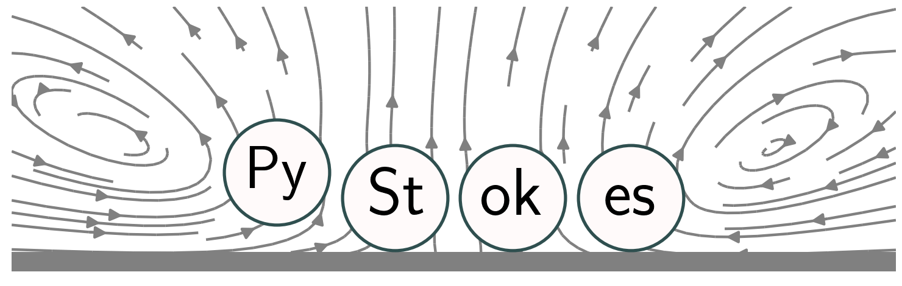

PyStokes API¶
{kind=link}
PyStokes is a numerical library for Stokesian hydrodynamics. It uses a grid-free method, combining the integral representation of Stokes equation, spectral expansion, and Galerkin discretization, to compute hydrodynamic interactions between spheres with slip boundary conditions on their surfaces. The library also computes suspension scale quantities, such as rheological response, energy dissipation and fluid flow. The computational cost is quadratic in the number of particles and upto 1e5 particles have been accommodated on multicore computers. The library has been used to model bacterial suspensions, active colloids and autophoretic particles.
See installation instructions and more details on the PyStokes GitHub page `<https://github.com/rajeshrinet/pystokes/blob/master/README.md>’_
API Reference¶
- Stokes flow in an unbounded domain
- Stokes flow in a space bounded by a no-shear plane
- Stokes flow in a space bounded by a no-slip plane
- Stokes flow in parallel plane no-slip walls
- Stokes flow in a periodic domain
- Mollified irreducible multipole approach
- Phoresis: in the unbounded domain
- Phoresis: in the half-space bounded by a plane
- Force fields in colloidal systems
- Utils: Miscellaneous function